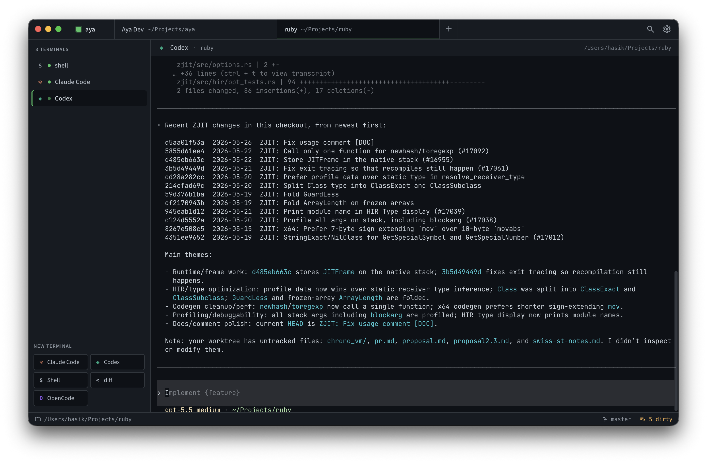

Project-first
Top tabs are real project directories. Each project has its own shells, agent sessions, branch status, and recent output.
A free, open-source desktop app for long-lived Claude Code, Codex, Aider, and shell sessions organized by project.

Aya is for the workflow where a session from Monday still matters on Wednesday. Projects are the top-level unit; terminals and agents live inside them.
Top tabs are real project directories. Each project has its own shells, agent sessions, branch status, and recent output.
Aya launches official CLIs in normal interactive terminals, so Claude Code, Codex, Aider, and custom presets behave as expected.
Use a normal checkout, or open each worktree as another project when that is the shape of the work.
The aya helper opens the current directory in the
desktop app, focuses known projects, and gives harnesses a local
way to report status without scraping provider state.
$ aya .
opens this repo as a project
$ aya status waiting "Needs approval"
marks the active agent as waiting
$ aya notify --title "Aya" "Tests passed"
sends a desktop notification from the current paneGrab the latest release for macOS or Linux, or build it yourself. The macOS DMG and zip are Developer ID signed and Apple-notarized; Linux ships AppImage and deb.
# or build from source
git clone https://github.com/khasinski/aya.git
cd aya
npm install
npm run package